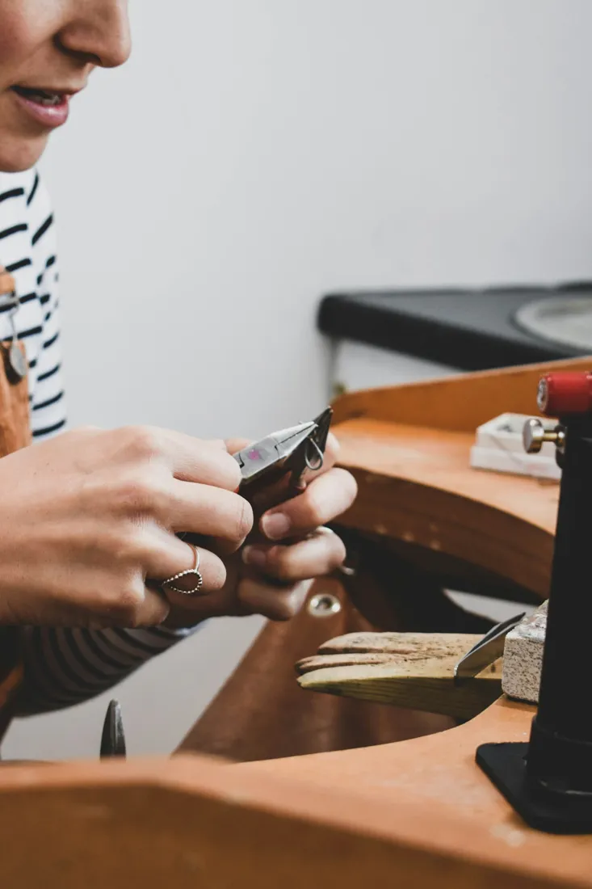
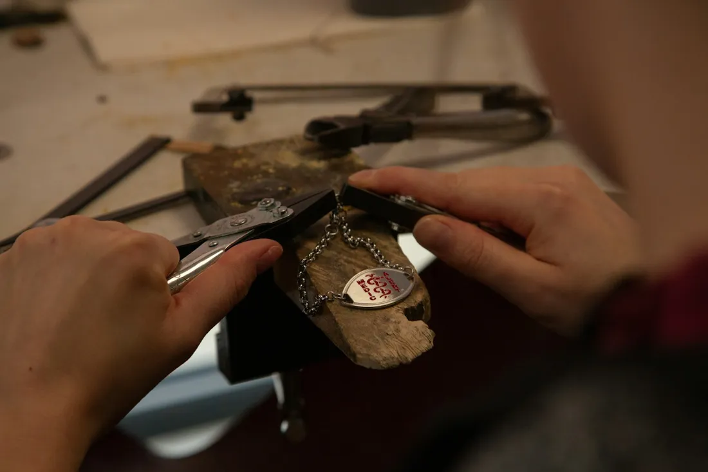
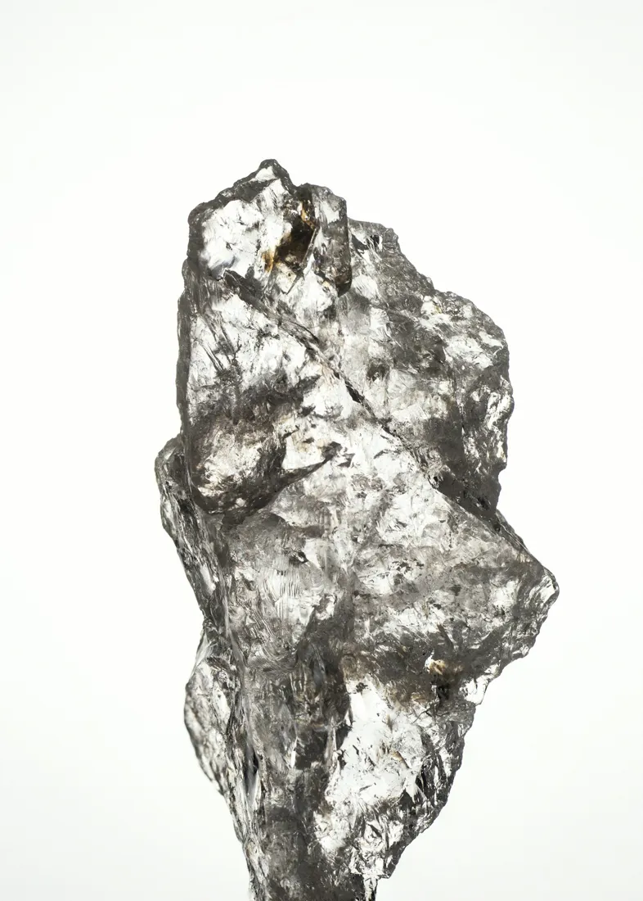
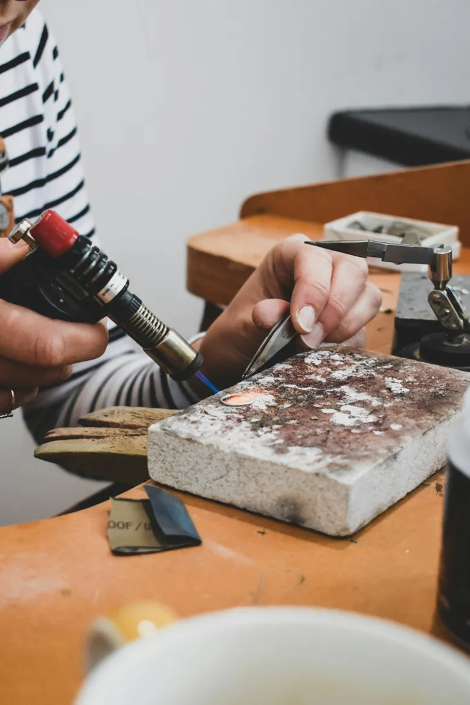

The atelier
One jeweller, one bench and fifteen years of practice.

About Vera
Vera studied as a goldsmith and worked for big jewellery houses for ten years. In 2019 she opened her own atelier to make fewer pieces, but each one from start to finish.
Metals come from certified refineries, stones have documents, and old gold can be reused in a new piece.



Care and guarantee
Lifetime guaranteeOn the work and the setting of stones.
Free cleaningOnce a year, ultrasound and polish.
ResizingOne time free within a year.
Old goldWe melt it into a new piece and count its weight.